Home / MLT / Week 7 / Real questions
MLT week 7 - real exam questions
59 questions pulled from past papers whose wording matches this week's topics, newest first, duplicates removed. Pick your answers, then press Check answers. Figures and answer keys are the originals.
Elapsed 00:00
Consider the following dataset with two binary features  and binary label
and binary label  :
:
 Consider the following three claims about this dataset: (i) Logistic regression (using the raw features
Consider the following three claims about this dataset: (i) Logistic regression (using the raw features  , with or without a bias term) can achieve zero training error. (ii) A decision tree of depth at most
, with or without a bias term) can achieve zero training error. (ii) A decision tree of depth at most  , using axis-aligned splits on , can achieve zero training error. (iii)
, using axis-aligned splits on , can achieve zero training error. (iii)  -nearest-neighbour, evaluated on this training set, achieves zero training error. Consider each point is its own nearest neighbour. Select the option that lists exactly the claims that are true.
-nearest-neighbour, evaluated on this training set, achieves zero training error. Consider each point is its own nearest neighbour. Select the option that lists exactly the claims that are true.
and binary label :
Consider the following three claims about this dataset: (i) Logistic regression (using the raw features , with or without a bias term) can achieve zero training error. (ii) A decision tree of depth at most , using axis-aligned splits on , can achieve zero training error. (iii) -nearest-neighbour, evaluated on this training set, achieves zero training error. Consider each point is its own nearest neighbour. Select the option that lists exactly the claims that are true.- (i), (ii) and (iii)
- Only (ii) and (iii)
- Only (i) and (iii)
- Only (iii)
Suppose the dataset is initially linearly separable. Later, the data-generating process changes and the class boundary becomes highly nonlinear, for example:  for one class and
for one class and  for the other. Without manually creating nonlinear features, which classifier among the three is most naturally capable of representing this type of decision boundary?
for the other. Without manually creating nonlinear features, which classifier among the three is most naturally capable of representing this type of decision boundary?
for one class and for the other. Without manually creating nonlinear features, which classifier among the three is most naturally capable of representing this type of decision boundary?- Perceptron
- Logistic Regression
- Decision Tree
- None of these
A decision-tree node contains  training examples:
training examples:  positive and negative. A candidate split divides them into two children: one child with
positive and negative. A candidate split divides them into two children: one child with  positive and negative, the other with positive and negative. Using entropy (base- logarithms), compute the information gain of this split. (Round to decimal places.)
positive and negative, the other with positive and negative. Using entropy (base- logarithms), compute the information gain of this split. (Round to decimal places.)
training examples: positive and negative. A candidate split divides them into two children: one child with positive and negative, the other with positive and negative. Using entropy (base- logarithms), compute the information gain of this split. (Round to decimal places.)Consider binary classification on input features  . Define the decision boundary of a trained classifier as the set of points at which its predicted label changes. For which of the following method(s) can this decision boundary be non-linear in
. Define the decision boundary of a trained classifier as the set of points at which its predicted label changes. For which of the following method(s) can this decision boundary be non-linear in  ?
?
. Define the decision boundary of a trained classifier as the set of points at which its predicted label changes. For which of the following method(s) can this decision boundary be non-linear in ?- Perceptron.
- Logistic regression, predicting the positive class when
 .
. - -nearest-neighbour with Euclidean distance.
- A decision tree using axis-aligned splits.
- Gaussian Naïve Bayes in which the class-conditional feature variances differ between the two classes.
- A support vector machine with a linear kernel.
- A support vector machine with an RBF (Gaussian) kernel.
Identify the correct relationship(s) between bias, variance, and the hyperparameter  in the - Nearest Neighbours algorithm.
in the - Nearest Neighbours algorithm.
in the - Nearest Neighbours algorithm.- Increasing leads to an increase in bias.
- Decreasing leads to an increase in bias.
- Increasing leads to an increase in variance.
- Decreasing leads to an increase in variance.
Consider the effect of each operation below on a model's bias and variance. Which of the following statements are correct?
- Regularising the weights in a linear/logistic regression model increases bias and decreases variance.
- Increasing the maximum depth of a decision tree increases bias and decreases variance.
- Increasing the number of hidden units in a neural network decreases bias and increases variance.
- Removing all the non-support-vectors from the training set of an SVM leaves both bias and variance unchanged.
Consider a binary classification dataset in which the two classes are perfectly linearly separable. You are considering a Perceptron, Logistic Regression, and a Decision Tree. If the objective is to learn a linear decision boundary and no probability estimates are required, which of the following classifiers are appropriate choices?
- Perceptron only
- Logistic Regression only
- Both Perceptron and Logistic Regression
- Decision Tree only
Which of the following statements about entropy and information gain in decision-tree learning are correct?
- If a feature splits a node into perfectly pure children, its information gain at that node equals the entropy of that node.
- A node whose examples all belong to a single class has entropy
 and needs no further splitting.
and needs no further splitting. - Information gain can be negative if a split increases impurity.
- After a parent node is split into child nodes, no individual child node can have entropy greater than the parent node's entropy.
Which of the following statements about bagging are correct?
- Bagging reduces the variance of the ensemble's prediction.
- Bagging substantially reduces the bias of the base learner.
- Bagging tends to help most when the base learners are diverse (weakly correlated with one another).
- Bagging tends to help most with high-variance, low-bias base learners such as deep, unpruned decision trees.
- averaging all base learner reduces variance, if every base learner produces identical predictions.
Consider a binary classification problem in  . The feature space is partitioned into the following four regions:
. The feature space is partitioned into the following four regions:  is any real number. At each node, the split is chosen to maximize the information gain based on entropy. What is the minimum number of binary questions (splits) that the decision tree must ask to obtain leaf nodes with zero entropy?
is any real number. At each node, the split is chosen to maximize the information gain based on entropy. What is the minimum number of binary questions (splits) that the decision tree must ask to obtain leaf nodes with zero entropy?
. The feature space is partitioned into the following four regions: 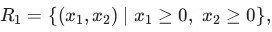
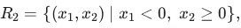
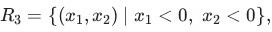
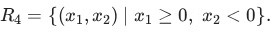
Each region contains the same number of observations. All observations in regions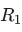
and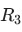
belong to the positive class, while all observations in regions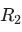
and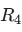
belong to the negative class. A decision tree is constructed using axis-aligned binary splits of the form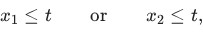
where is any real number. At each node, the split is chosen to maximize the information gain based on entropy. What is the minimum number of binary questions (splits) that the decision tree must ask to obtain leaf nodes with zero entropy?- It is impossible using only axis-aligned splits.
A node in a decision tree contains an equal number of positive and negative training examples. What is the entropy of this node?
- 0
- 0.5
- 1
- It depends on the total number of training examples.
Which of the following statements about the K-Nearest Neighbours (KNN) algorithm are correct?
- The choice of distance metric can affect the predicted class.
- Once trained, KNN makes predictions without referring to the training data.
- Every prediction does not require computing distances from the test point to all training data.
- The computational cost of prediction generally increases with the size of the training dataset.
Consider the following decision tree for a binary classification problem with features in  and labels in
and labels in  denotes the set of all points in for which the decision tree outputs
denotes the set of all points in for which the decision tree outputs  as the predicted label, find the area corresponding to the region . Enter the nearest integer as your answer.
as the predicted label, find the area corresponding to the region . Enter the nearest integer as your answer.
and labels in 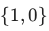
.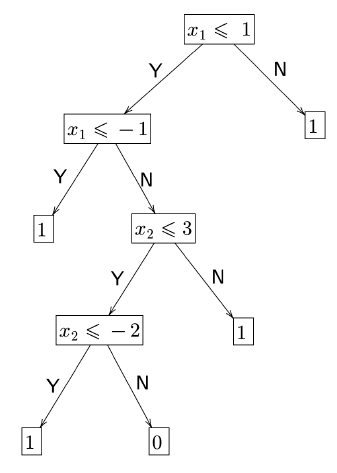
If denotes the set of all points in for which the decision tree outputs as the predicted label, find the area corresponding to the region . Enter the nearest integer as your answer.Comprehension passage for this question
Consider the given 2D diagram. The datapoints are slightly exaggerated for better visualization. Red points represent the negative class (  ) and green points represent the positive class (
) and green points represent the positive class (  ). A test point
). A test point  is shown. Use the K-Nearest Neighbors (KNN) algorithm with
is shown. Use the K-Nearest Neighbors (KNN) algorithm with 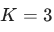
.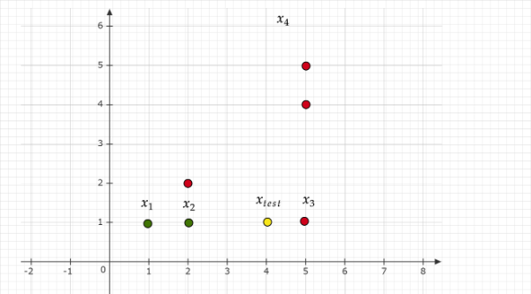
Based on the above data, answer the given subquestions.Which of the following best explains the classification of ?
?- The nearest neighbors are dominated by positive class points.
- The nearest neighbors are dominated by negative class points.
- Positive class points are closer in all directions.
- The classification is determined by majority voting among the nearest neighbors.
Consider the two decision trees shown in the figure.
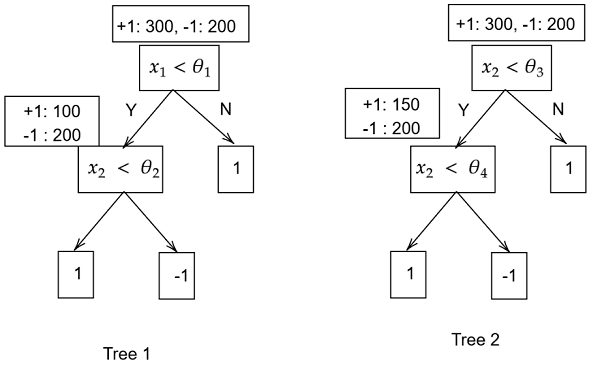
Which of the following statements is correct?- Tree 1 has higher information gain than Tree 2
- Tree 2 has higher information gain than Tree 1
- Both trees have equal information gain
- Cannot be determined without further splits
Consider a training dataset for a classification problem with four data-points. Red circles represent data-points with label and green squares represent data-points with label . A test-point is located at  . Dotted circles centered at with radii
. Dotted circles centered at with radii  and
and  are drawn for your convenience.
are drawn for your convenience.
 KNN with Euclidean distance and
KNN with Euclidean distance and  is the classifier. Now, a new training data-point with label is added somewhere inside the outermost circle of radius such that it leaves the predicted label of the test data-point unchanged. Let be the set of all points that could be the potential location of this new training data-point. Find the area of the region corresponding to .
is the classifier. Now, a new training data-point with label is added somewhere inside the outermost circle of radius such that it leaves the predicted label of the test data-point unchanged. Let be the set of all points that could be the potential location of this new training data-point. Find the area of the region corresponding to .  : We use KNN with for both datasets.
: We use KNN with for both datasets.
and green squares represent data-points with label . A test-point is located at . Dotted circles centered at with radii and are drawn for your convenience.
KNN with Euclidean distance and is the classifier. Now, a new training data-point with label is added somewhere inside the outermost circle of radius such that it leaves the predicted label of the test data-point unchanged. Let be the set of all points that could be the potential location of this new training data-point. Find the area of the region corresponding to . : We use KNN with for both datasets.


Comprehension passage for this question
Consider a node in a decision tree that has 5 data-points. The  data-point is represented by a feature-label pair
data-point is represented by a feature-label pair  , where
, where  { ,
{ ,  }.
}.
 Consider the split
Consider the split  at the parent node resulting in left and right child nodes. The left child node has all data points for which is true. Entropy is used to determine the purity of the nodes.Recall that the formula for the entropy of a node is:
at the parent node resulting in left and right child nodes. The left child node has all data points for which is true. Entropy is used to determine the purity of the nodes.Recall that the formula for the entropy of a node is:  where
where  is the fraction of positive data-points in the node. Use at least three digits after the decimal point in all intermediate calculations. Based on the above data, answer the given subquestions.
is the fraction of positive data-points in the node. Use at least three digits after the decimal point in all intermediate calculations. Based on the above data, answer the given subquestions.Find the entropy of the parent node. Enter your answer correct to two decimal places.
Comprehension passage for this question
Consider a node in a decision tree that has 5 data-points. The data-point is represented by a feature-label pair , where { , }.
Consider the split at the parent node resulting in left and right child nodes. The left child node has all data points for which is true. Entropy is used to determine the purity of the nodes.Recall that the formula for the entropy of a node is: where is the fraction of positive data-points in the node. Use at least three digits after the decimal point in all intermediate calculations. Based on the above data, answer the given subquestions.Find the entropy of the right child. Enter your answer correct to two decimal places.
Comprehension passage for this question
Consider a node in a decision tree that has 5 data-points. The data-point is represented by a feature-label pair , where { , }.
Consider the split at the parent node resulting in left and right child nodes. The left child node has all data points for which is true. Entropy is used to determine the purity of the nodes.Recall that the formula for the entropy of a node is: where is the fraction of positive data-points in the node. Use at least three digits after the decimal point in all intermediate calculations. Based on the above data, answer the given subquestions.Find the information gain. Enter your answer correct to two decimal places.
Which among the following is TRUE for k-NN algorithm? Select all that apply.
- 1-nearest neighbour is sensitive to outliers.
- k-NN can only be applied to a classification problem.
- As k increases, the model is more likely to overfit.
- The bias increases with the increase in the value of k.
- The variance increases with the increase in the value of k.
In a random forest classifier with  total features, each split is chosen by evaluating a randomly selected subset of
total features, each split is chosen by evaluating a randomly selected subset of  features. Consider how changing affects the behavior of the forest. Which of the following statements are correct?
features. Consider how changing affects the behavior of the forest. Which of the following statements are correct?
total features, each split is chosen by evaluating a randomly selected subset of features. Consider how changing affects the behavior of the forest. Which of the following statements are correct?- Increasing reduces the correlation between any two trees in the forest.
- Decreasing reduces the correlation between any two trees in the forest.
- If is too small, individual trees may underfit the data.
- Increasing always decreases the variance of the random forest model.
- Decreasing makes trees more similar to each other.
Which of the following statements are true about the decision tree algorithm?
- Decision trees are prone to overfitting if the maximum depth is set tooshallow.
- Decision trees are not affected by the order of features in the dataset.
- Decision trees are sensitive to small perturbations in the dataset and canresult in different tree structures.
- Decision trees can handle both numerical and categorical features.
Comprehension passage for this question
Based on the above data, answer the given subquestions.

Which among the following represents the correct decision boundary for the decision tree?
Note: Here + represents the label 1 and − represents the label 0.


Comprehension passage for this question
Suppose you want to build a decision tree to help diagnose a certain disease based on patient data. You have a dataset of 1000 patients labeled as either “positive” or “negative”. Here, positive represents patients with the disease and negative represents no disease. One of the feature used to diagnose is headache. Below is the breakdown of the patients reporting headache: Headache present: 300 positive, 50 negative Headache not present: 100 positive, 550 negative
 Suppose you want to build a decision tree to help diagnose a certain disease based on patient data. You have a dataset of 1000 patients labeled as either “positive” or “negative”. Here, positive represents patients with the disease and negative represents no disease. One of the feature used to diagnose is headache. Below is the breakdown of the patients reporting headache: Headache present: 300 positive, 50 negative Headache not present: 100 positive, 550 negative
Based on the above data, answer the given subquestions.
Suppose you want to build a decision tree to help diagnose a certain disease based on patient data. You have a dataset of 1000 patients labeled as either “positive” or “negative”. Here, positive represents patients with the disease and negative represents no disease. One of the feature used to diagnose is headache. Below is the breakdown of the patients reporting headache: Headache present: 300 positive, 50 negative Headache not present: 100 positive, 550 negative
Based on the above data, answer the given subquestions.What is the entropy of the root node? Enter the answer correct to two decimal places.
Comprehension passage for this question
Suppose you want to build a decision tree to help diagnose a certain disease based on patient data. You have a dataset of 1000 patients labeled as either “positive” or “negative”. Here, positive represents patients with the disease and negative represents no disease. One of the feature used to diagnose is headache. Below is the breakdown of the patients reporting headache: Headache present: 300 positive, 50 negative Headache not present: 100 positive, 550 negative
Suppose you want to build a decision tree to help diagnose a certain disease based on patient data. You have a dataset of 1000 patients labeled as either “positive” or “negative”. Here, positive represents patients with the disease and negative represents no disease. One of the feature used to diagnose is headache. Below is the breakdown of the patients reporting headache: Headache present: 300 positive, 50 negative Headache not present: 100 positive, 550 negative
Based on the above data, answer the given subquestions.What is the information gain for choosing the feature “headache” for splitting at the root node? Enter the answer correct to two decimal places.
Which of the following conditions must be satisfied for a decision tree to be pure at a given node?
- The entropy of the node is maximum.
- The information gain at the node is negative.
- All samples at a node belong to the same class.
- The entropy of the node is 0.
For a given dataset, a 1-Nearest Neighbor (1-NN) and a 3-Nearest Neighbor (3-NN) classifier are applied. Which classifier is likely to exhibit a higher Leave-One-Out Cross Validation (LOOCV) error? In case of tie-breaker, assign a positive class (+) to the data point.
 For a given dataset, a 1-Nearest Neighbor (1-NN) and a 3-Nearest Neighbor (3-NN) classifier are applied. Which classifier is likely to exhibit a higher Leave-One-Out Cross Validation (LOOCV) error? In case of tie-breaker, assign a positive class (+) to the data point.
For a given dataset, a 1-Nearest Neighbor (1-NN) and a 3-Nearest Neighbor (3-NN) classifier are applied. Which classifier is likely to exhibit a higher Leave-One-Out Cross Validation (LOOCV) error? In case of tie-breaker, assign a positive class (+) to the data point.
For a given dataset, a 1-Nearest Neighbor (1-NN) and a 3-Nearest Neighbor (3-NN) classifier are applied. Which classifier is likely to exhibit a higher Leave-One-Out Cross Validation (LOOCV) error? In case of tie-breaker, assign a positive class (+) to the data point.
- 1-NN
- 3-NN
- Both have the same error.
For a decision tree, each node has exactly two child nodes (balanced tree). If the tree has a depth of 3, how many leaf nodes are there?
p is the proportion of points with label 1 in some node in a decision tree. Which of the following statements are true?
- As the value of p increases from 0 to 1, the impurity of the node increases.
- As the value of p increases from 0 to 1, the impurity of the node decreases.
- The impurity of the node does not depend on p.
- p = 0.5 correspond to the case of maximum impurity.
Comprehension passage for this question
Based on the above data, answer the given subquestions.

Compute the Leave-one-out cross validation (LOOCV) error for the 3- nearest neighbour (3-NN) algorithm on this dataset. Enter the answer correct to two decimal places.
Which of the following options are correct? Select all that apply.
- Underfitted models generally have less bias and high variance.
- A decision tree with the maximum possible length may lead to overfitting.
- Weak learners are those whose performance is slightly better than therandom classifier.
- All the estimators in bagging can be trained parallelly.
Which of the following options are not correct? Select all that apply.
- Underfitted models generally have less bias and high variance.
- A decision tree with the maximum possible length may lead to overfitting.
- Weak learners are those whose performance is slightly better than therandom classifier.
- All the estimators in bagging can be trained parallelly.
Comprehension passage for this question
Consider a binary classification problem with a training dataset of 100 points, evenly distributed between two classes (50 points in each class). You decide to train a k-NN algorithm with k = 3. Each point is considered its own neighbor during classification.
Based on the above data, answer the given subquestions.What is the minimum number of misclassifications that can occur in the training dataset when using this k-NN algorithm?
Comprehension passage for this question
Consider a binary classification problem with a training dataset of 100 points, evenly distributed between two classes (50 points in each class). You decide to train a k-NN algorithm with k = 3. Each point is considered its own neighbor during classification.
Based on the above data, answer the given subquestions.Assuming there are outliers, the decision boundary becomes smoother with decreasing value of k
in a k-NN algorithm.
- TRUE
- FALSE
Comprehension passage for this question
Consider a binary classification problem in which a decision tree is classifying data points into two classes, A and B. In a particular node of the tree, 60% of the data points belong to class A, while the remaining 40% belong to class B.
Based on the above data, answer the given subquestions.Do you have enough information to find the entropy of this node?
- Yes
- No
Comprehension passage for this question
Consider a binary classification problem in which a decision tree is classifying data points into two classes, A and B. In a particular node of the tree, 60% of the data points belong to class A, while the remaining 40% belong to class B.
Based on the above data, answer the given subquestions.If the answer to the previous question is ”Yes,” calculate the entropy of this node to three decimal places. If the answer to the previous question is ”No,” enter -1 as your answer.
Match the characteristics given below with the appropriate ensemble technique. 1. Decision stumps 2. Deep decision trees 3. Parallel execution 4. Sequential execution
- Bagging → (2), (3); Boosting → (1), (4)
- Bagging → (1), (4); Boosting → (2), (3)
- Bagging → (1), (3); Boosting → (2), (4)
- Bagging → (2), (4); Boosting → (1), (3)
Comprehension passage for this question
Based on the above data, answer the given subquestions.

What is the most appropriate choice of activation function for the output layer if the binary cross-entropy loss is used?
- Sigmoid
- Linear
- ReLU
Comprehension passage for this question
If a and b are integers, answer the given subquestions that follow. Hint: Plotting the dataset helps.

Find the entropy of the root node. Use log2______________________.
Consider the following decision tree for a classification problem in which all the data-points are constrained to lie in the unit square in the first quadrant. That is 0 ≥ x1, x2 ≤ 1. If a point is picked uniformly at random from the unit square, what is the probability that the decision tree predicts this point as belonging to class 1?
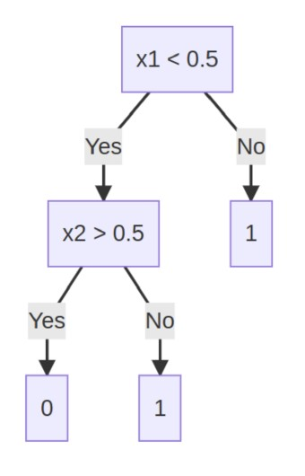
Consider the following decision tree for a classification problem in which all the data-points are constrained to lie in the unit square in the first quadrant. That is 0 ≥ x1, x2 ≤ 1. If a point is picked uniformly at random from the unit square, what is the probability that the decision tree predicts this point as belonging to class 1?Which of the following statements are correct?
- Overfitting models have high bias and low variance.
- Underfitting models have low bias and high variance.
- Generally, weak learners in the random forest tend to overfit.
- If the performance of each estimator in the bagging algorithm is almostidentical, the benefit of using bagging to combine them may be minimal or insignificant.
- In random forests, multiple decision trees (estimators) are trainedsimultaneously, allowing for parallel processing and faster model training.
Select all the statements that are true about decision trees and k-Nearest Neighbors (k-NN) in machine learning:
- Decision trees are a supervised learning algorithm used for classifications.
- The k-NN algorithm is a lazy learner, which means it doesn’t build an explicitmodel during the training phase.
- In k-NN, the value of k represents the number of features used forclassification.
- k-Nearest Neighbors (k-NN) is a parametric model that requires estimatingprobability distributions.
- The depth of the tree is a hyperparameter and is typically chosen using cross-validation.
You are working on a decision tree algorithm to classify whether a bank loan applicant will default on their loan based on several financial factors. The dataset includes Credit Score, Annual Income, Loan Amount, Loan Term as features. The target variable is binary: 1 for ”Default” and 0 for ”No Default.” You have a dataset of 500 loan applicants, and you want to construct a decision tree to predict loan default. To determine the first split (root node), you'll use the information gain as the criterion. Here’s the distribution of loan default in the dataset: Default: 150 applicants No Default: 350 applicants Calculate the Entropy for the initial dataset.
Given a training dataset with 100 data points, how many distances would we have to compute in the process of predicting the label of test-point in the k-NN algorithm with k = 5
If the proportion of points belonging to class 1 in a node is p, for what value of p is the node’s entropy maximum?
Which of the following statements is/are true about the K-NN algorithm?
- K-NN is sensitive to outliers in the dataset.
- K-NN is a supervised learning algorithm used for classification.
- K-NN assigns class labels to new instances based on a decision boundary learned from thetraining data.
- The training dataset is not required while predicting the label of a test-point inthe K-NN algorithm.
Comprehension passage for this question
Based on the above data, answer the given subquestions.

Calculate the information gain for the "Age Group" feature.
Comprehension passage for this question
Based on the above data, answer the given subquestions.
Calculate the information gain for the "Income level" feature.

- The values of 0-1 loss function will be 3
- The values of cross entropy loss will be equals to 3.65
- The values of 0-1 loss equals 4.
- The values of cross entropy loss will be equals to 6.35
Comprehension passage for this question
Consider a binary classification problem and a decision tree that is being trained to classify the points. In one of the internal nodes in this tree, 75% of the data-points belong to one of the two classes and the rest belong to the other class. You are not given the information about which class is more numerous in this node. Based on the above data, answer the given subquestions. If the answer to the previous questions is "Yes", find the entropy of the node. Use log2 and enter your answer correct to three decimal places. If the answer to the previous question is "No", enter -1 as your answer.
Consider a decision stump. The information gain for the question at the parent is zero. If the entropy of the left-child is equal to the entropy of the parent, what is the entropy of the right child? Assume that each child has at least one data-point in it and that the entropy of the parent is non-zero.
- The entropy of the right-child is equal to half the entropy of the left-child.
- The entropy of the right-child is equal to twice the entropy of the left-child.
- The entropy of the right-child is equal to the entropy of the parent.
- The entropy of the right-child is the sum of the entropies of the parent and theleft-child.
Choose the correct statements.
- If the performance of each estimator in the bagging algorithm is almostidentical, the benefit of using bagging to combine them may be minimal or insignificant.
- Weak learners have low bias and high variance.
- In random forests, multiple decision trees (estimators) are trainedsimultaneously, allowing for parallel processing and faster model training.
- In the random forest algorithm, multiple decision trees are trained on thesame dataset to create an ensemble model.
Consider the following data set:
 Consider the following data set: Which of the following will have lower leave-one-out cross-validation error?
Consider the following data set: Which of the following will have lower leave-one-out cross-validation error?
Consider the following data set: Which of the following will have lower leave-one-out cross-validation error?- 1-Nearest Neighbor
- 3-Nearest Neighbor
Which of the following estimators are more likely to be preferred for bagging? Select all that apply.
- A decision stump
- A decision stump with randomly selected features for splitting the nodes
- k -NN classifier with a smaller value of k.
- k-NN classifier with a larger value of k .
- A fully grown decision tree with randomly selected features for splitting thenodes
Consider the following data set:
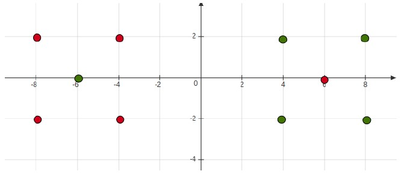
Consider the following data set: Which of the following will have larger leave-one-out cross-validation error?- 1-Nearest Neighbor
- 3-Nearest Neighbor
A knn algorithm with k = 30 gives high training error and high validation error. What value of the k we should choose to get the better performance of the algorithm?
- Less than 30
- Greater than 30
Consider a binary classification problem. Let p1 denote the proportion of class 0 examples in a particular node. Which of the following graphs shows correct curves for the Gini-index, Entropy and misclassification error of that node?


In a random forest model let p < m be the number of randomly selected features that are used to identify the best split at any node of a tree. Which of the following are true? (m is the original number of features)
- Increasing p reduces the correlation between any two trees in the forest.
- Decreasing p reduces the correlation between any two trees in the forest.
- Increasing p increases the performance of individual trees in the forest.
- Decreasing p increases the performance of individual trees in the forest.
A knn algorithm with k = 10 gives low training error and high validation error. What value of k should we choose to get the better performance of the algorithm?
- Less than 10
- Greater than 10